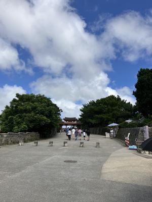
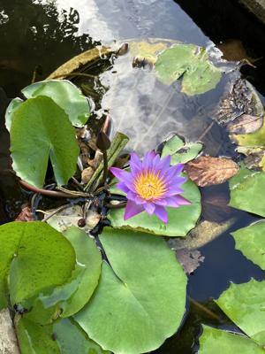

うるがいの話 ある日
最新: 阿麻和利【うるがいの話 ある日】とは 一日だけのプログです
『うるがいの話』の最新一日だけのプログで、通信料が少なく経済的だ。カニの画像をクリックすると全ての日付が載る『うるがいの話』サイトを表示します
|
|
【うるがいの話】 うるがい(ｳﾙｶﾞｲ urugai)とは、『もずくがに』の名前でとても大きくなります。 |
|---|---|
|
|
【カミマヤーの話】 猫のことを方言でマヤーといいます。カミマヤー（kamimayaa）とは、神の猫のことです。 |
|
【たながぁの音楽】 たながぁ（ﾀﾅｶﾞｰ tanagaa）とは手長えびのことで、何種類かあり大きいのは車 エビぐらいになります。 |

|
【ぶながぁの話】 ぶながぁ(ﾌﾞﾅｶﾞｰ bunagaa)とは、赤い髪の毛、赤い身体、そして身長は１ｍ２０ｃｍ ぐらい、川の蟹を食べているの目撃された。場所は沖縄県国頭郡大宜味村のと ある村僕の隣近所に住んでいる爺さんから、聞いた話です。 |
|
|
【ギーマの話】 ギーマ(giima)とは、山原の里山に咲くスズランに似た、 花を付けます。実は食べられます、 気が付くと口の周りが紫になっています。 |
2024年06月24日 (月）阿麻和利
16:12
 
唐船ドーイの工工四が載っている本を予約し、受付の手続きをしているとき
近くの本棚をチラっとみる。琉球建国記・・・、フムフム面白しろそう、と
借りて読む。コドモを友達の中部在留の父親は、阿麻和利を繋がりがあると
自慢していた。そもそも、阿麻和利とは誰？、以前頻繁に飛行機を利用して
いるとき機内で、うるま市の中高校生が出演している現代版組踊「肝高の阿
麻和利」を頻繁に報道しているのでなんとなく分かるのだが。
琉球建国記 集英社文庫 矢野 隆∥著
５世紀、琉球王国。無頼漢の赤や氷角たちと立場を超えて仲間となった役人
の加那は、民衆に悪政を強いる勝連城主を倒し、新たな按司・阿麻和利とな
るが…。黎明期の琉球王朝の動乱を描く歴史長編。
なんと、３日で完読する。うむ、父親が自慢するだけはある。本の中では金
丸は、悪いやつ！、ネットをみると尚円金丸となんと国王になっていること
を知る。
１６時０６分 ビットコインの総資産 ￥２８、８２８（↓１，０００！）